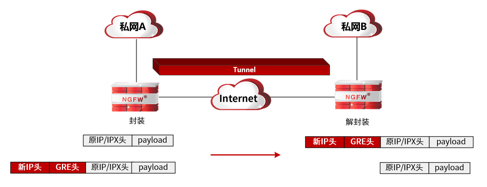
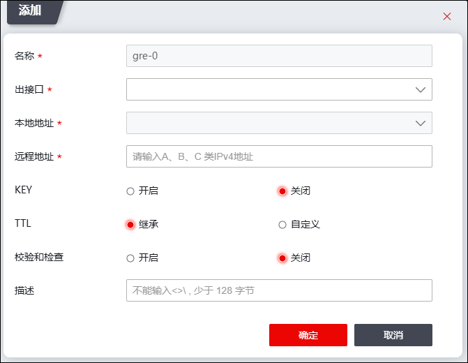
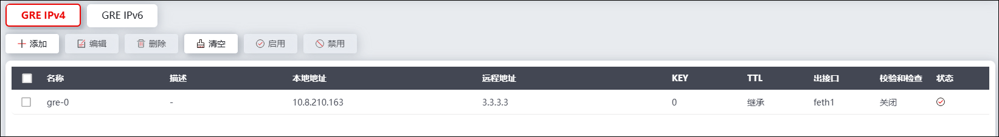
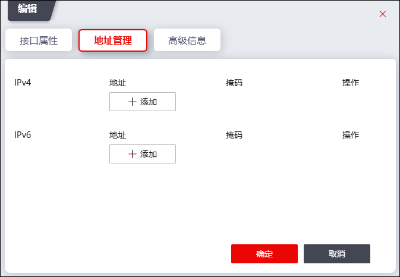

GRE（Generic Routing Encapsulation，通用路由封装）协议是网络层协议，通过Tunnel（隧道）技术将某些网络层协议（如IP和IPX）的数据报文进行封装，从而使这些被封装的数据报文（乘客）能够在另一个网络层协议（承载协议）中传输。NGFW的GRE应用于IPv4网络中连接IPv6孤岛时，需与IPv6孤岛的边缘路由设备建立GRE隧道（边缘路由设备支持GRE隧道的同时需支持IPv4/IPv6双栈），此时NGFW所防护的内部IPv6网络可通过GRE隧道跨IPv4公网与IPv6孤岛进行通信。这种情况下，IPv6是乘客协议，IPv4是承载协议。
GRE隧道是一个虚拟的点对点的连接，在实际应用中可以看成是一个通道，通道两端通过虚接口进行点对点连接。数据报文通过GRE隧道传输时，GRE隧道会根据自身特征对数据包进行封装及解封装，即便通信双方跨越了不同类型承载网络，仍然可以通过GRE隧道技术实现数据报文的交互。GRE隧道传输数据流程为：隧道起点封装-->路由转发-->隧道终点解封装，隧道封装和解封装的详细说明如下：
GRE隧道传输的报文具有三个报头，包括（以IP协议为例）：
1）原IP报头（源/目的IP地址为数据报文通信真正的源/目的IP地址）；
2）GRE报头；
3）新IP报头（源/目的IP地址为GRE隧道两端可互通的接口地址）。
在公网中，数据包的载荷、原IP报头、GRE报头均作为新IP报头的载荷在网络中传输，直至数据包到达隧道的目的端，真正的数据报文才被解析出来。以IP网络主机通过GRE隧道通信为例，GRE封装及解封装过程如下图所示。

lGRE封装过程
1）本端设备接收到IP数据报文，如果数据报文经过各安全功能模块均允许放行且查找路由表时该数据报文的出接口为GRE虚接口，则将该数据报文交由GRE虚接口。
2）GRE虚接口接收到该数据报文后，为其封装GRE报头，然后在GRE报头基础上封装新的IP报头；此时新IP报头的源IP地址为该GRE隧道源接口IP地址，目的IP地址为该GRE隧道目的接口IP地址。
3）NGFW根据新IP报头中的目的IP地址查找路由表，从相应接口将该被GRE协议封装的数据报文转发出去。
lGRE解封装过程
1）对端设备接收到该被封装的数据报文后，根据目的地址发现该数据报文的接收者为自己且该数据报文为GRE报文，则将该数据报文交由GRE协议处理。
2）GRE协议进行解封装、关键字验证、校验和检测以及序列号检测后，去掉新IP头及GRE头部，然后交由IP协议处理。
3）IP协议根据解除GRE封装的报文查找路由表，从相应接口将该报文转发到真正接收者。
下面介绍在NGFW上设置GRE隧道的具体步骤。
配置GRE隧道的要点包括：1）配置GRE隧道；2）配置需通过GRE隧道传输的数据包的路由。
|
²NGFW支持IPv4GRE隧道和IPv6GRE隧道，IPV4GRE隧道本地地址和远程地址配置IPv4地址，IPV6GRE隧道本地地址和远程地址配置IPv6地址，除了地址配置不同外，两种隧道配置方法相同。 |

IPv4GRE隧道和IPv6GRE隧道分页配置，配置方法相同，下面以配置IPV4GRE隧道为例介绍GRE隧道的配置方法。
| 步骤1 | 选择 ，激活“GRE IPv4”页签，进入GRE隧道配置界面。 |
| 步骤2 | 添加GRE隧道。 |
1）点击『添加』，如下图所示。

在设置GRE隧道时，各项参数的具体说明如下表所示。
参数 |
说明 |
|---|---|
名称 |
必选项。在下拉框选择隧道名称，隧道名称“gre-”开头，例如gre-0。不同的隧道需选择不同的隧道名称。NGFW支持最多128个gre隧道。 |
出接口 |
必选项。在下拉框中选择隧道出接口，对于需经该隧道处理的报文从指定隧道出接口转发出去。 |
本地地址 |
必填项，指定GRE隧道的源IP地址，需设置与隧道对端可通信的本端物理接口的IP地址。 说明： 1）GRE隧道本端的“本地地址”需与对端的“远程地址”一致，否则，隧道将不能建立。 2）如果GRE隧道应用于IPv4网络连接IPv6孤岛，本地地址和远程地址应配置为IPv4地址，这样，被封装的数据报文才能在承载网（IPv4）中传输。 |
远程地址 |
必填项，指定GRE隧道的目的IP地址，需设置隧道对端与本端本地地址可通信的对端物理接口的IP地址。 说明： 1）GRE隧道本端的“远程地址”需与对端的“本地地址”一致，否则，隧道将不能建立。 2）如果GRE隧道应用于IPv4网络连接IPv6孤岛，本地地址和远程地址应配置为IPv4地址，这样，被封装的数据报文才能在承载网（IPv4）中传输。 |
KEY |
标识隧道关键字，作为验证隧道有效性的依据。隧道两端配置的“隧道关键字”必须一致，否则无法通过验证。 取值范围为0-4294967295。 |
TTL |
设置GRE隧道本端设备与对端设备可经过的最大路由器数目。可选项：继承、自定义。 Ø继承：TTL值继承原数据包IP报头中的TTL值。 Ø自定义：TTL值自定义，取值范围为1-255。 |
校验和检查 |
设置是否开启校验和检查。如果开启校验和检查功能，则发送方将对GRE头及报文负载计算校验和，接收方对接收到的报文计算校验和并与报文中的校验和进行比较，一致则对报文进一步处理，否则丢弃。 “”表示开启，“”表示关闭。默认为关闭。 说明： 如果只有隧道一端配置了启用校验和，将不对报文进行校验和检验；只有隧道两端都配置了开启“校验和检查”功能，才对报文进行校验和检验。 |
描述 |
设置GRE隧道简单的描述信息。 |
2）点击【确定】按钮完成GRE隧道的创建。新添加的GRE隧道会显示在界面上，如下图所示。

|
²GRE隧道创建完成后，NGFW会生成一个与隧道名称一致的GRE虚接口。如隧道名称命为gre-0，则GRE虚接口为gre-0。 |
| 步骤3 | 配置GRE虚接口IP地址。 |
勾选GRE隧道列表，点击列表上方的“编辑”，可在弹出的窗口中配置GRE虚接口的部分属性（本端GRE虚接口IP地址需与GRE隧道对端设备的GRE虚接口在同一个网段）。

| 步骤4 | 选择 ，配置GRE路由。 |

如果配置了出接口为GRE虚接口的路由，匹配该路由的数据报文需通过GRE隧道传输。关于路由的配置具体请参见 静态路由。